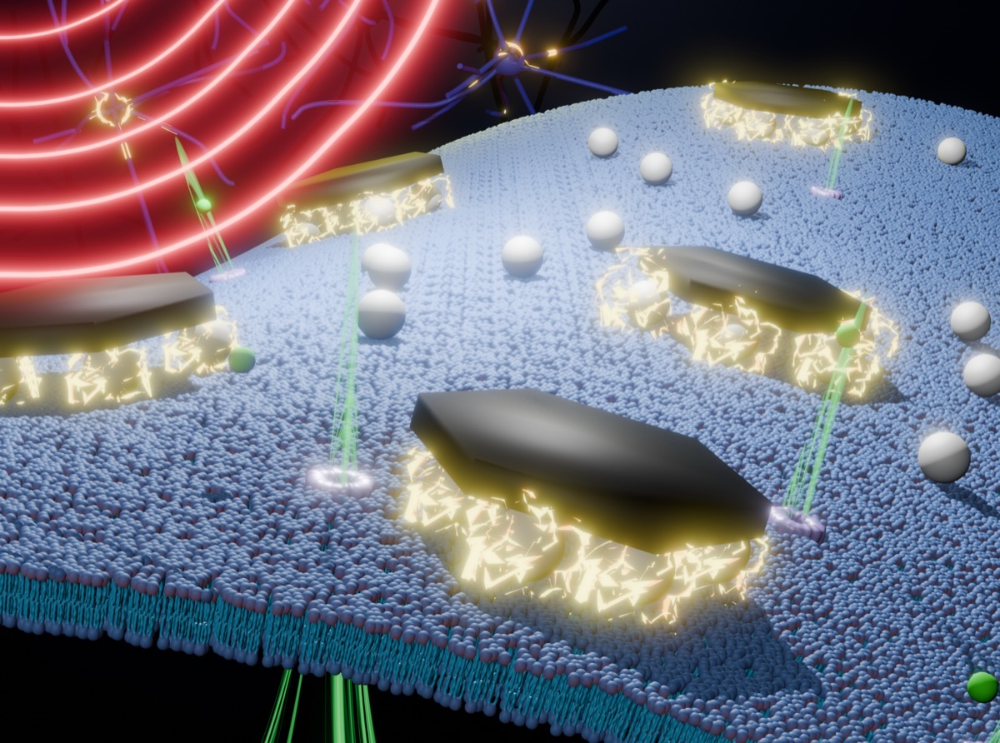

研究方向
四種觸及神經元的方法
我們結合神經科學、奈米科技、電機與軟體工程、分子生物學和動物實驗，從第一顆奈米粒子一路做到自由活動的小鼠。
教學
神經科學互動教室
課堂上使用的互動網頁：調整參數，看看神經元怎麼回應。（網頁內容為英文）
最新消息
近期動態
- 榮獲 THOR × NeuroBench Challenge 2026 神經形態運算競賽 Track 2（運算效率）冠軍，Track 1（準確率）僅差冠軍 0.5 個百分點。
- 預印本：時間干涉腦刺激在不同頻率下調控興奮與抑制的平衡。
- 預印本：URCHIN，為資料有限的預訓練設計的水平式脈衝語言模型。
- 預印本：以磁鐵礦奈米盤在低強度交變磁場下，無線且選擇性地刺激深腦星狀膠細胞。
- 平行化脈衝狀態空間架構 PHCSSM 發表於 Array，程式碼已在 GitHub 公開。
- 合作研究：強化 prestin 寡聚化以提升聲遺傳學效果，發表於 Theranostics。
- Podcast：江柏翰老師在《Talk 太爆炸》EP56 分享從生科到 MIT 神經研究的穿越人生。
- MagTIES 扭矩驅動磁電刺激，以毫秒級精度調控神經，獲選 Advanced Healthcare Materials 期刊封底（inside back cover）。
- 江柏翰老師獲電機學院優秀教學獎與優秀導師獎。
- 開源無線神經調控磁刺激系統發表於 Scientific Reports。
